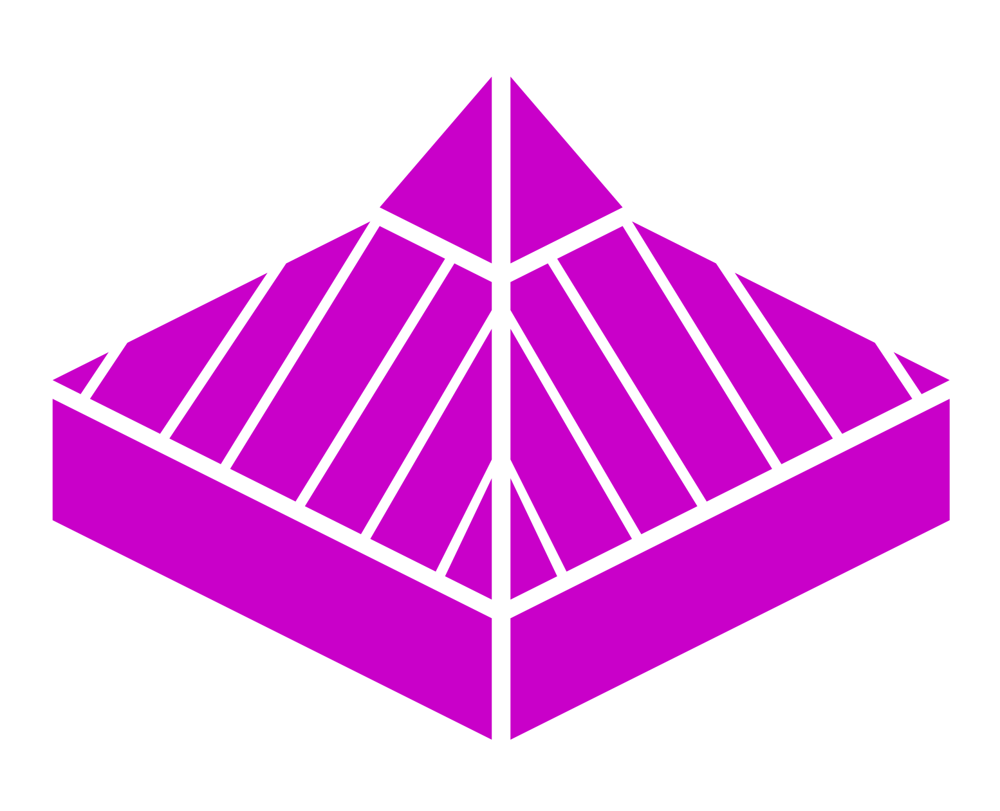

Comprueba
Háblale y comprueba si responde. No uses estímulos dolorosos.

IES María SoliñoEDUCADOR RCP TUS MANOS CUENTANNo necesitas ser un superhéroe. Reconocer una emergencia, pedir ayuda y saber actuar ya marca la diferencia.
Primero, comprueba que acercarte es seguro.
Háblale y comprueba si responde. No uses estímulos dolorosos.
Si no responde, llama ya. Pon el altavoz y comprueba su respiración mientras se conecta.
Si no responde y no respira normalmente, inicia RCP. El 112 te guía. Usa el DEA cuando llegue.
Una idea cada vez. Elige una lección y avanza a tu ritmo.
Ensaya decisiones y entrena el ritmo. La técnica se practica con un maniquí.
Entre 100 y 120 compresiones por minuto. Prueba a seguir el ritmo de 110.
Entrena solo con un maniquí. El ritmo no mide la profundidad ni la calidad de la RCP.
Marca lo que habéis practicado juntos. Esta lista no da una nota ni acredita tu técnica.
Equivocarse también enseña. Cada respuesta tiene una explicación.
Este reto comprueba conocimientos. La práctica de RCP requiere formación presencial y un maniquí.